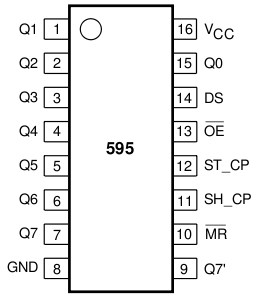
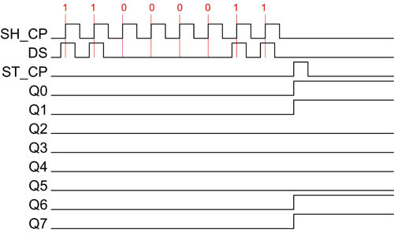

DS - данные
SH - тактирование
ST - защелка
Когда на тактовом входе SH_CP появляется логическая единица, бит находящийся на входе данных DS считывается и записывается в сдвиговый регистр. Этот бит записывается в самый младший разряд. При поступлении на тактовый вход следующего импульса высокого уровня, в сдвиговый регистр записывается следующий бит со входа данных. А тот бит который был записан ранее сдвигается на один разряд влево, а его место занимает вновь пришедший бит. Следующий тактовый импульс запишет третий бит, а два предыдущих сдвинутся дальше. Когда все восемь бит заполнились и приходит девятый тактовый импульс то регистр снова начинает заполнятся с младшего разряда и всё повторятся вновь. Что бы данные появились на выходах Q0…Q7 нужно их «защёлкнуть». Для этого необходимо подать логическую единицу на вход ST_CP.
MR осуществляет сброс регистра, устанавливая все выходы Q0…Q7 в состояние логического нуля. Для осуществления сброса нужно подать логический ноль на этот вход и подать положительный импульс на вход ST_CP. Очень полезная функция, так как при подаче питания на микросхему на выходе появляется некое произвольное значение. При работе с регистром на этом выводе должна находится логическая единица.
OE (output enable) если подать сюда логическую 1, то выходы будут находится в высокоомном HI-Z состоянии. Когда подаем на этот вход логический 0, выходы будут находится в рабочем состоянии.
Q7′ предназначен для последовательного соединения сдвиговых регистров.
!!ВАЖНО!!
Неделю моя жопа истекала кровью, пока не решил подцепить MR к ноге контроллера и не начал сбрасывать регист в цикле перед каждым переключением сегмента. До этого момента наблюдались тусклое наползание цифр на соседние сегменты и лютый батхерт у автора.